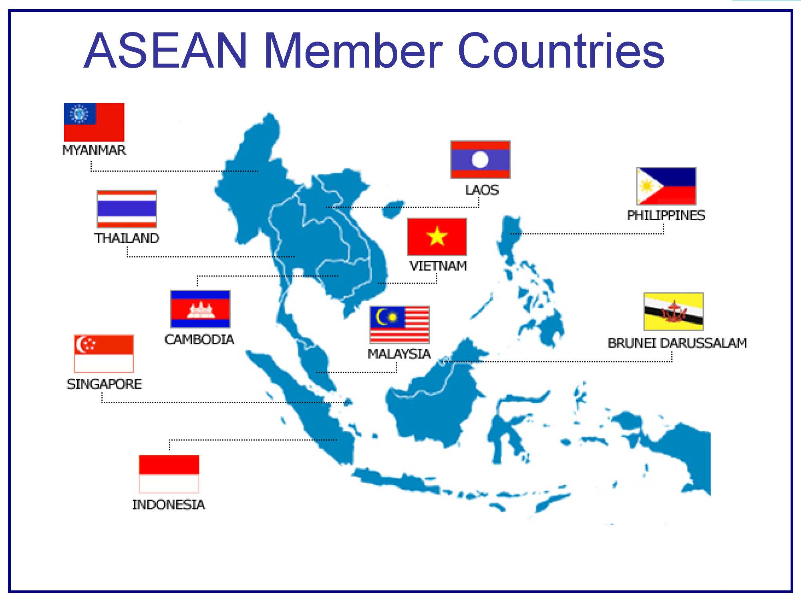
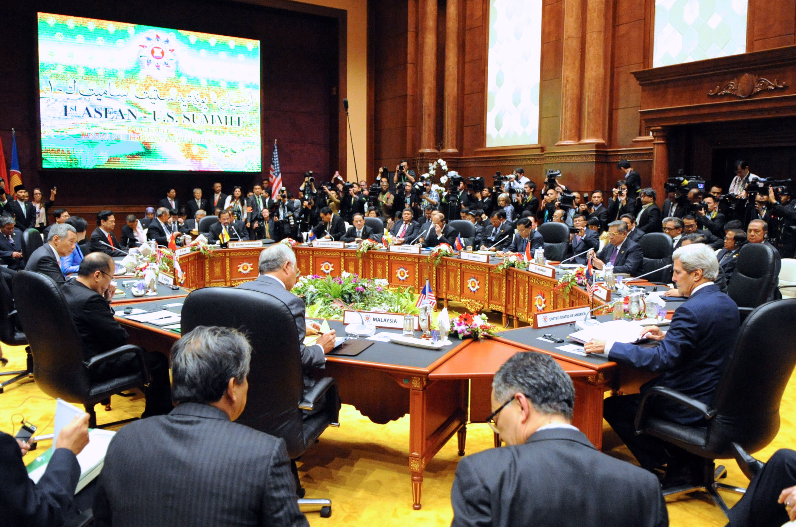

we are required to take a module called General Education 3 (GenEd 3). This module is a little bit different for me as I am in a programme called Singapore Polytechnic's Outstanding Talent Programme or SPOT. SPOT's GenEd 3 require us to learn about the Association of Southeast Asian Nations' (ASEAN) ASEAN Economic Community (AEC) which is a lot of stuff that ASEAN does to better help its member state in economic.

ASEAN and its member states
In this module, I learn about the AEC, how to write a draft resolution and attended a mock conference. The whole experience was rather interesting and painful. I had to dive into the internet and search every nook and cranny that it had to find the necessary evidence for my report A.K.A "Draft Resolution". It was frustrating and very taxing as I could not see the completion of my report. The light at the end of the tunnel was simply not there. But after countless weeks of struggle, the deadline came faster than the light from the tunnel. The results for the report came out and let us just say that whatever that I got does not justify my membership in the programmed with the words "Oustanding Talent" in its name.The (lack of) light at the end of the tunnel
Next up was a conference that while stressful, I had quite a bit of fun in. Having to "yield the floor back to the chair" and ask for the "chair" makes it sounds like we are having a conversation with the furniture in the classroom. At first, I find it very weird as I am restricted to not making a sound while I do not have the permission to speak. It was confusing as I had to force my mouth shut while I do not have the permission to talk at all. Nevetherless, I go the hang of it and it was entertaining to listen to other delegate's ideas and having to role play the conference. Unfortunately, our conference ended and we were done with the module.

Mock conference
Thinking back, the few things I remember are the fun conference and the bad report that I wrote. While it was stressful and frustrating - especially the grades I got for the report - I did learn quite a lot of things. I have learned how to actually find proper evidence for any report in the future. To find the real justification to why I write what I write and not just copying random articles that referenced the same topic as I do. I have learned to be more resilient too, to keep on going even when you could not see the light at the end of the tunnel. To keep on clicking on the next link and finding the required evidences.At the end of the day (or semester in this case) SPOT's GenEd 3 have shown me a lot, from the different things ASEAN do to protect its member state, to how 10 over countries come to share and speak their mind (by asking the chair to pass the floor) and even my weaknesses and what I should do next to improve. Truly, I am grateful for the lessons taught by the teachers and the programme for letting my experience it.
While it is a great module that warrants a 10 out of 10 from me. I certainly will not want to experience it again.